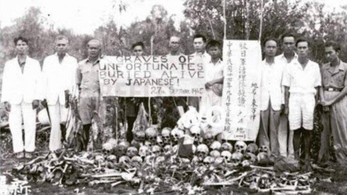

Santa cruz 1991
Pembantaian Santa Cruz adalah peristiwa penembakan terhadap kurang lebih 250 pengunjuk rasa pro-kemerdekaan Timor Timur. Pembantaian Santa Cruz terjadi di Timor Timur pada 12 November 1991, di tengah pendudukan Indonesia di Timor Leste. Peristiwa Pembantaian Santa Cruz memakan sebanyak 273 korban jiwa. Oleh sebab itu, peristiwa Pembantaian Santa Cruz diakui sebagai bagian dari genosida Timor Timur.
Selengkapnya
fall of soviet union
After his inauguration in January 1989, George H.W. Bush did not automatically follow the policy of his predecessor, Ronald Reagan, in dealing with Mikhail Gorbachev and the Soviet Union. Instead, he ordered a strategic policy re-evaluation in order to establish his own plan and methods for dealing with the Soviet Union and arms control.
Selengkapnya